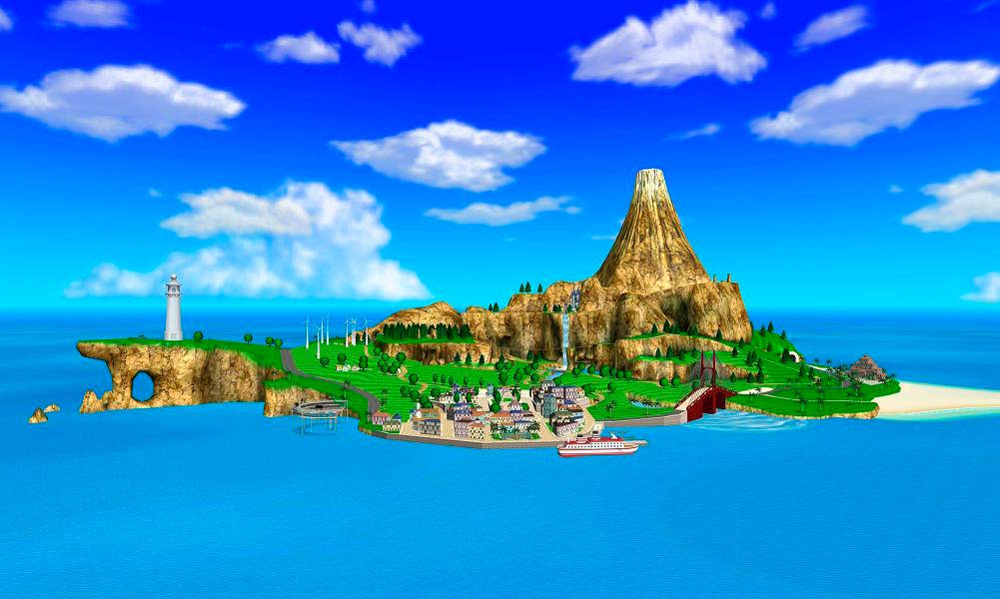
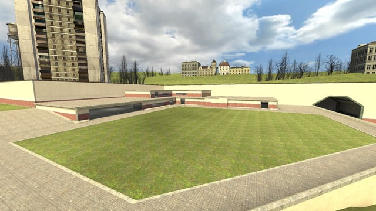
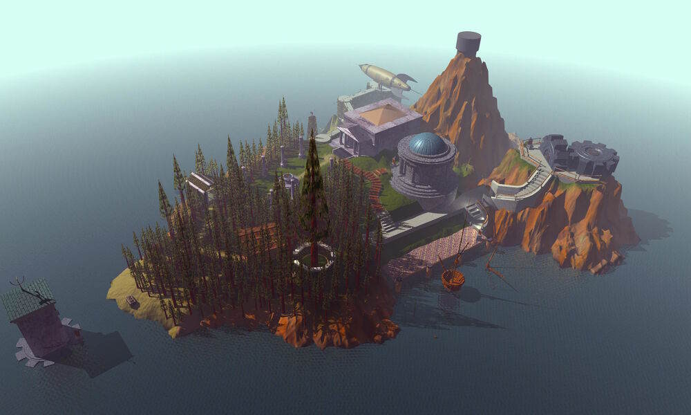
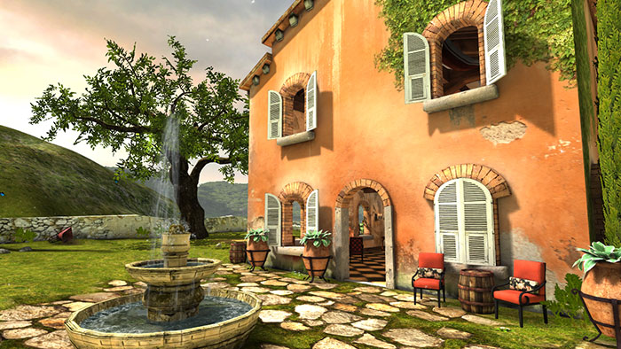
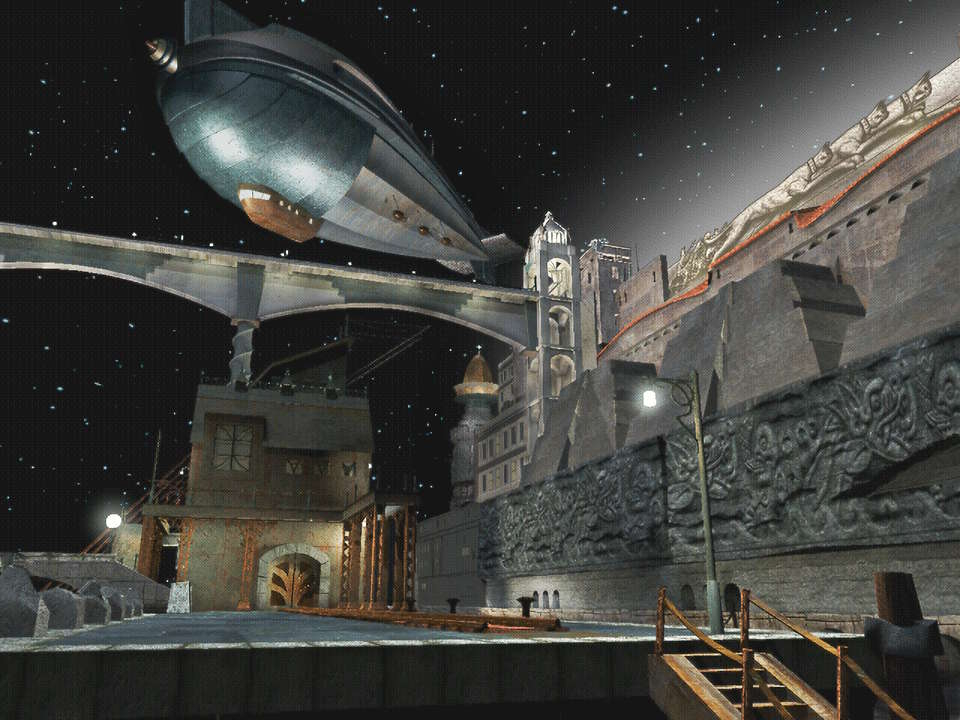

(List) 5 Video Game Locations I'd Live In
14 September 2025
Videos gmae! They're, like, neat I think!
Look, I have absolutely no hook or neat introduction here, this is just an unapologetically shameless listicle so let's just cut to the chase. Here's like 5 video game locations I'd like to live in, in no particular order.
#5: Wuhu Island (Wii Sports Resort)

Yeah, I know, kind of an obvious first pick, whatever. Every zoomer older than 15 will and likely has shoved this one into their own versions of this list, but it's for a good reason. Wuhu island is prime holiday getaway material.
The island is not only beautiful and full of historical and natural landmarks alike, but being the location for a vacation themed minigame collection, it also has a wide range of fun pastimes, from exploring the beautiful island, to smacking each other with foam bats on top of a suspended platform to FLYING GODDAMN PLANES AND SKYDIVING, Wuhu Island has a little everything for everyone. I'd retire here, not much more than that to say about this sunny island.
#4: gm_mobenix (Garry's Mod)

gm_mobenix is one of those video game maps that feel akin to eating a childhood meal, not unlike a Proustian flashback or that scene from the rat movie.
It's a map that is at times perfectly emblematic of the era it was made in (though in a much more sensible manner than something like Harbl Hotel) yet it still stands strong as a prime "fuck around with your friends for a few hours" spot even 13(!) years past its initial release.
gm_mobenix features a role-playing focused residential area, an awesome bowling alley with a disco room, pleanty of flat open space to mess around with dupes in and (in my humble opinion as a Densha de Go! fan) the star of the show, a fully functional train system. If me and my friends got somehow isekai'd here, I would not mind it one bit.
#3: Myst Island (Myst)

When you first come to on the island after linking with a mysterious book, you're lost, confused and honestly probably a little scared. Your sole company here are the strange contraptions that pepper the island and Robyn Miller's incredibly immersive ambient soundscape.
As you further explore the age, the once peculiar puzzles get solved one by one as you unravel the tale of the family that once inhabited this place. By the end of the game, you too begin to feel at home in this strange island, and once I finally finished my adventure and got the true ending I was frankly overjoyed by the fact the game lets you freely roam the isle and all the ages within at your own pace. I'd live here 100% no question.
#2: Tuscany (Oculus Demo)

Okay, this one's a bit of a deep cut, I won't lie. Does this even count as a game? Whatever, look, early VR stuff has a really odd sort of je ne sais quoi quasi-nostalgia feeling to me that I can't quite quantify into actual words. And at the center of those feelings lies Tuscany.
The Tuscany demo boils down to a small Tuscan style house with a garden overlooking a lake. You can walk around, you can look around, but that's it.
Tuscany was one of the first ever complex scenes rendered with modern day virtual reality tech, so the models are chunky, the lighting is baked as hell and the textures are crispy. And I wouldn't have it any other way. The nostalgia mixed with the already cozy and cute Italian architecture makes this PRIME "I live here" real estate.
#1: Rubacava (Grim Fandango)

Rubacava is a moody port town, and in my humble opinion, THE most memorable location in Grim Fandango.
From the Calavera Café to the imposing lighthouse and, of course, probably the reason I turned out like this, the iconic Blue Casket, Rubacava is a location that just somehow stuck with me even years after my initial playthrough.
{kind=link}
It's a perfect blend of dark and moody and cozy and welcoming. LucasArts, especially towards their final projects, had a wonderful knack for crafting places that feel real and lived in, and Rubacava is perhaps the prime example of this. I want my AFTERLIFE to be here.
God, this was such a self indulgent post even for my standards lol.